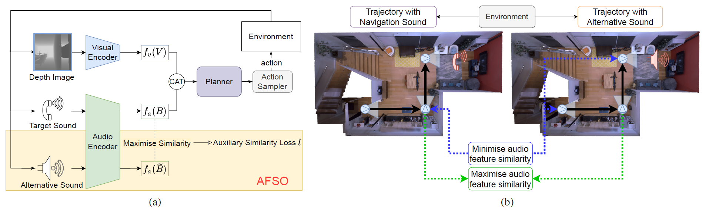

Towards Generalisable Audio Representations for Audio-Visual Navigation
- Shunqi Mao
- Chaoyi Zhang
- Heng Wang
- Weidong Cai
- University of Sydney


Overview
In audio-visual navigation (AVN), an intelligent agent needs to navigate to a constantly sound-making object in complex 3D environments based on its audio and visual perceptions. While existing methods attempt to improve the navigation performance with preciously designed path planning or intricate task settings, none has improved the model generalisation on unheard sounds with task settings unchanged. We thus propose a contrastive learning-based method to tackle this challenge by regularising the audio encoder, where the sound-agnostic goal-driven latent representations can be learnt from various audio signals of different classes. In addition, we consider two data augmentation strategies to enrich the training sounds. We demonstrate that our designs can be easily equipped to existing AVN frameworks to obtain an immediate performance gain (13.4%↑ in SPL on Replica and 12.2%↑ in SPL on MP3D).
Video
BibTeX
If you find our project useful in your research, please cite:
@InProceedings{Mao_2022_EAI,
author = {Mao, Shunqi and Zhang, Chaoyi and Wang, Heng and Cai, Weidong},
title = {Towards Generalisable Audio Representations for Audio-Visual Navigation},
booktitle = {2022 IEEE/CVF Conference on Computer Vision and Pattern Recognition, Embodied AI Workshop (EAI)},
month = {June},
year = {2022}
}